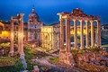
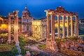

Multimédia:
Fotografias
Vídeo
Poema
Fotografias
 

Vídeo:
Poema:
- Nas colinas onde o tempo repousa,
- Ergue-se Roma, de história gloriosa.
- Sob o céu azul, entre o mármore e o mar,
- Sussurram lendas que o vento faz dançar.
- Pelas ruas ecoam passos de impérios,
- Césares, poetas, destinos sérios.
- As pedras, guardiãs de antigas memórias,
- Contam vitórias e mil histórias.
- O Coliseu, imponente, desafia os séculos,
- Guardando ecos de aplausos e espectros.
- E no Tibre, as águas fluem devagar,
- Como se o tempo não quisesse passar.
- Entre igrejas e fontes, arte sem fim,
- Vive a alma da cidade, num eterno jardim.
- Roma, berço de mundos, cruz de civilizações,
- É um museu a céu aberto, de mil visões.
- E quando o sol se põe, dourando o seu chão,
- A cidade resplandece, pura emoção.
- Roma, eterna, em cada esquina respira,
- Um legado imortal que o coração inspira.